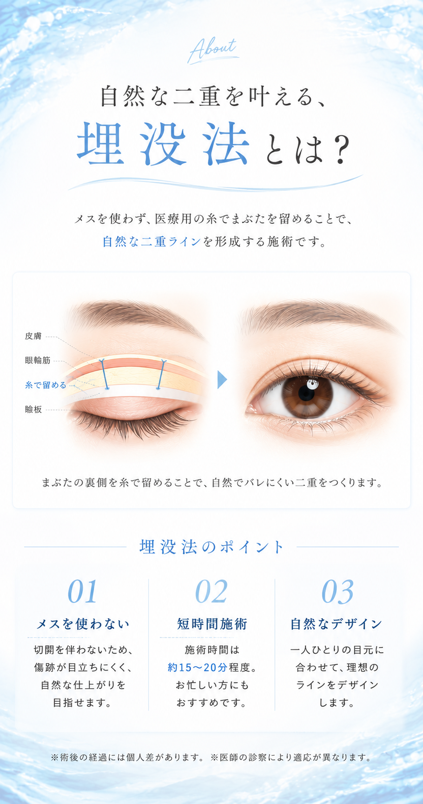
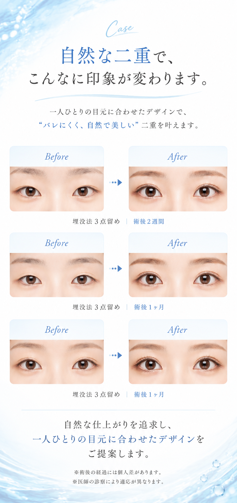
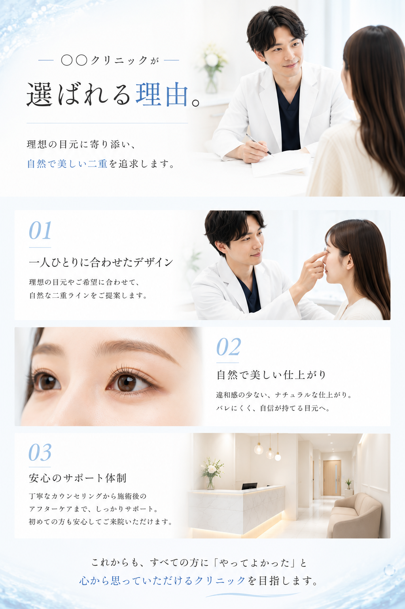
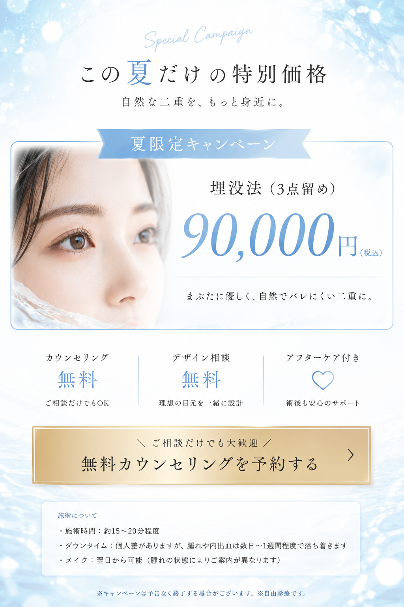

Q & A
個人差はありますが、腫れや内出血は数日〜1週間程度で落ち着くことがほとんどです。翌日からメイク可能です（腫れの状態によりご案内が異なります）。
埋没法（3点留め）の施術時間は約15〜20分程度です。お仕事の休憩時間でも対応可能なケースもございます。
埋没法は切開しないため傷跡が残りません。一人ひとりの目元に合わせてデザインするため、自然で「バレにくい」仕上がりを目指します。
もちろんです。カウンセリング・デザイン相談は無料で承っております。施術を決めていない段階でもお気軽にお越しください。
カウンセリング・デザイン相談・アフターケアがすべて料金に含まれています。追加費用は一切かかりません。